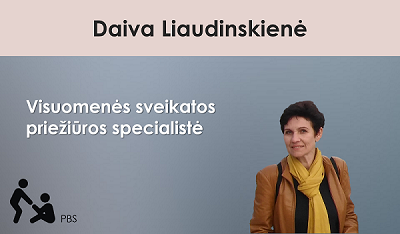
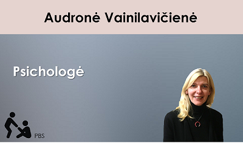
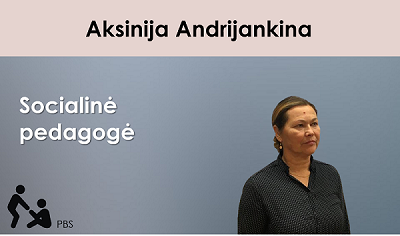
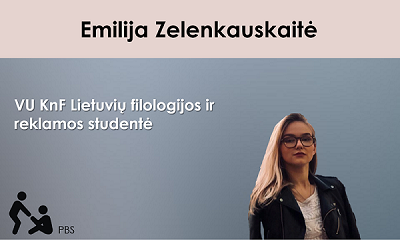

Kas yra PBS?
Paauglystė be streso (PBS) – tai AcceleratorX bendrovė, kuri siekia, kad paaugliai gyventų ramesnį gyvenimą, kadangi kiekvienais metais moksleiviai/studentai, mokymo įstaigose patiria stresą. Mes sugalvojome kaip galime tai palengvinti ir padėti vieni kitiems. Mūsų sukurtame tinklapyje galima bendrauti tarpusavyje, užduoti klausimą ir gauti atsakymą. Čia galite rasti įvairios informacijos kaip išmokti valdyti stresą. Konsultacijos su specialistais - psichologais (Vainilavičienė Audronė), socialiniais pedagogais (Aksinija Andijankina), buvusiais mokiniais (Emilija Zelenkauskaitė, VU studentė), (Vytautė Varnaitė, KTU studentė). Patarimai padės atsigauti nuo emociškai slegiančių problemų. Nelikime vieni kitiems abejingi!
Konsultantai
   